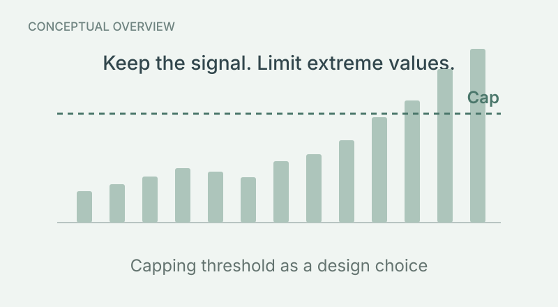
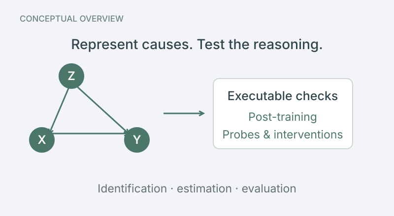

Leon studies the design of intelligent systems, from individual AI agents to organizations. His work connects AI and economics through agent design, causal reasoning and experimentation, and incentive mechanisms.
8 research items
Papers & Working Papers
AgentSpec: A Modular Specification Framework for Controlled Analysis of Embodied Agents
J. Chen, J. Shen, H. Kang, Z. Hong, Q. Jiang, S. Bose, Y. Zhang, L. Leng, A. Vyas, L. Mao, S. Ouyang, K. Zhou, and L. Qin
Manuscript
A modular framework for studying how reasoning, memory, reflection, and learning interact in embodied agents. Standardized component interfaces support controlled comparisons across DeliveryBench, ALFRED, MiniGrid, and RoboTHOR.
HasciDB: A Database for Identifying Cryptocurrency Airdrop Sybil Hunters
A. Wen, C. Li, S. Qu, L. Leng, and W. Cai
Accepted at Nanyang Blockchain Conference 2026
A reproducible database covering 3.5 million eligible addresses across 16 Ethereum airdrops. Five behavioral indicators identify suspected Sybil activity, supporting research on coordinated participation, token allocation, and airdrop mechanism design.

Optimal Capping Theory for Heavy-Tailed Metrics in Experimentation
H. Deng, L. Leng, and T. Ni
Working paper
How should an A/B test cap extreme observations in metrics such as user revenue? This project studies how the capping threshold changes both the measured treatment effect and its uncertainty, with the goal of improving sensitivity while controlling false positives.
Centralized Evaluation vs. Decentralized Evaluation
L. Leng, R. J. Gan, and S. Chen
Working paper · Presented at INFORMS and POMS, 2025–2026
A game-theoretic study of insurance claim assessment: how payment liability, information quality, and assessor incentives affect decisions and welfare. It compares centralized assessment with peer-based mechanisms that support costly, truthful review under specified assumptions, while accounting for remaining blind-reporting equilibria.
Research in Progress
Organizational Design for AI Agents
Microsoft Research Asia · Ongoing research
An experimentation platform for comparing agent teams organized as hierarchies, peer squads, or divisions. Teams perform the same business task with the task, information, model, and budget held fixed; deterministic evaluation and information-flow replay help isolate the effects of organizational structure.
Adaptive Compute Allocation for Agents
Microsoft Research Asia · Ongoing research
Agents can finish a task successfully while spending much more compute than necessary. This project replays checkpoints under alternative strategies—continuing, verifying, replanning, or refocusing—to measure their quality and cost, and is developing a controller that uses those comparisons to guide intervention.
Learning from Experimental Evidence
Tencent · Experiment knowledge systems
A knowledge and decision system that turns scattered experiment results into evidence-linked lessons and proposed follow-up tests. The design connects evaluation failures to repair tickets, with held-out checks and human review before changes enter the knowledge base.

Evaluating and Improving Causal Reasoning
Tencent · Benchmarks, post-training, and interpretability
Executable evaluations spanning experiment design, causal estimation, sensitivity analysis, and non-identification; post-training with programmatic verifiers; and controlled probes and interventions to study whether models represent and use causal concepts. The work also investigates tool-use regressions that aggregate accuracy can conceal.
No research matches this search. Try another topic or keyword.
Illustrations show conceptual overviews of the research.